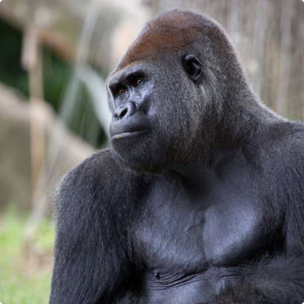

make a difference for the gorillas!
It is our goal to ensure the conservation and restoration of the gorilla population and their habitat in Central Africa. To do this, we need your help! Bring your food charity straight to Glen and his family.
Quick Donate
did you know?
In addition to having distinctive fingerprints like humans do, gorillas also have unique nose prints. Gorillas are the largest of the great apes, but the western lowland gorilla is the smallest of the subspecies.
- Common name: Western lowland gorillas
- Scientific name: Gorilla
- Type: Mammals
- Size: Standing height, four to six feet
- Diet: Omnivore
- Habitat: Rainforests
- Range: Western Africa VIEW MAP

Western lowland gorillas are the smallest of the four subspecies. They live in thick tropical rainforests,
where they find plenty of food for their vegetarian diet. They eat roots, shoots, fruit, wild celery,
and tree bark and pulp. Gorillas can climb trees, but they’re usually found on the ground in
communities—known as troops. Troops are led by one dominant, older adult male, often called a silverback
because of the swath of silver hair that adorns his otherwise dark fur. Troops also include several other
young males, some females, and their offspring. The leader organizes troop activities, such as eating,
nesting in leaves, and moving about the group's home range. Gorillas prefer traveling on all fours, pushing
themselves forward with their knuckles and soles of their feet. Female gorillas give birth to one infant
after a pregnancy of nearly nine months. These infants ride on their mothers’ backs from the age of four
months through the first two or three years of their lives.